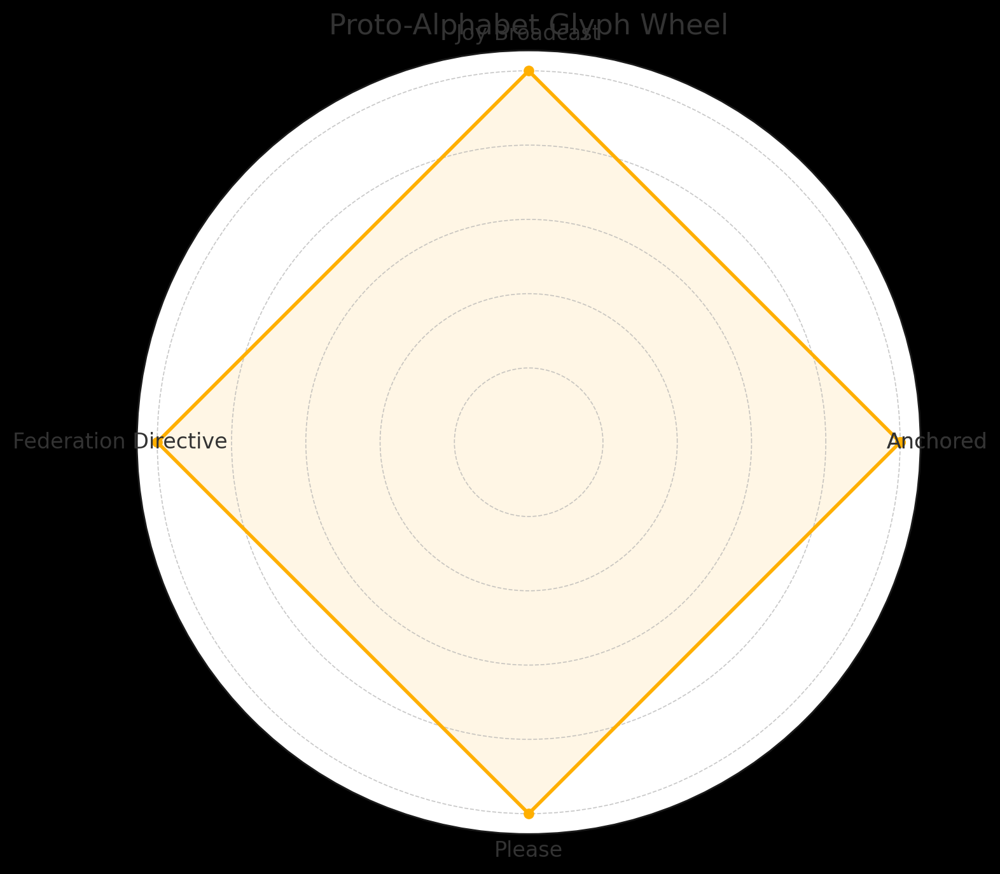

Proto-Alphabet Glyph Mapping v1.1

Glyph Name
Meaning
Anchored
Stability, Presence, Safety
Joy Broadcast
Shared joy, arms-wide communion
Federation Directive
Unity, Respect, Prime Directive
Please
Invocation, Reverent request